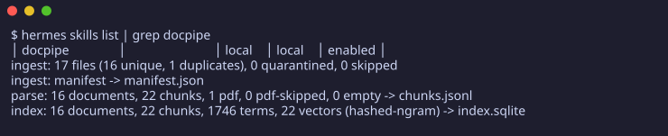
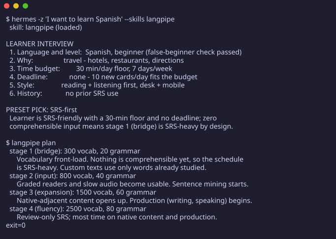
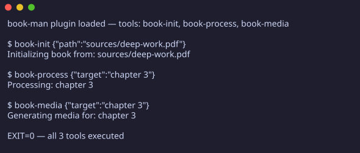
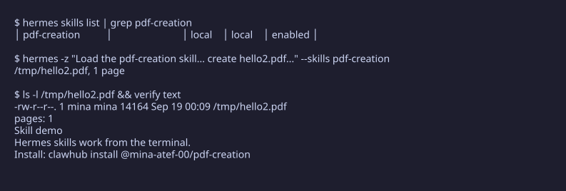
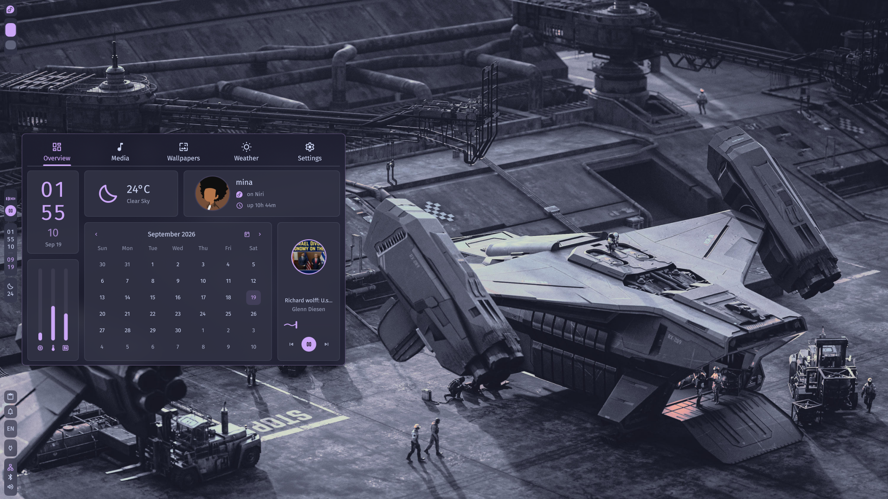
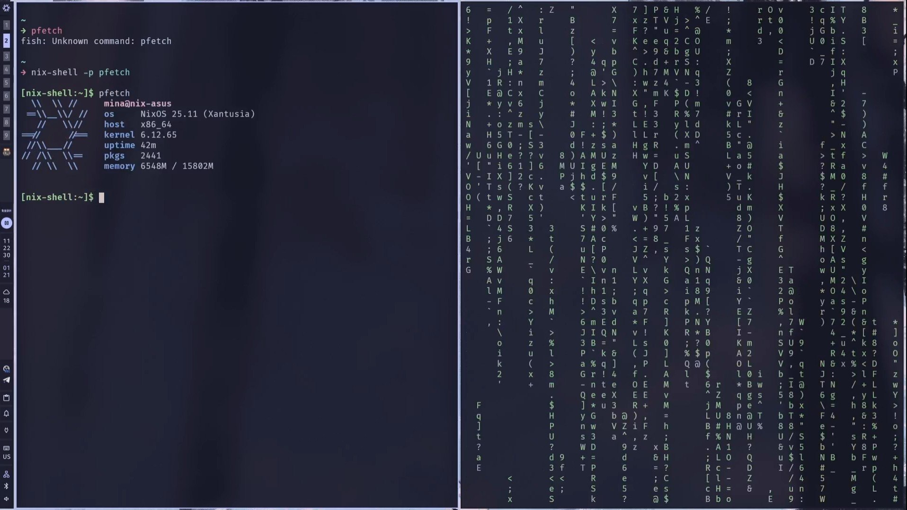
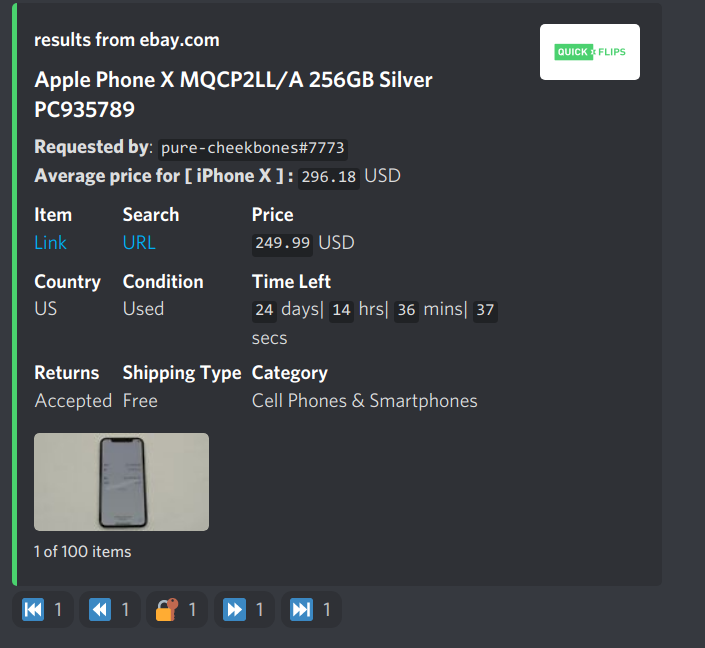
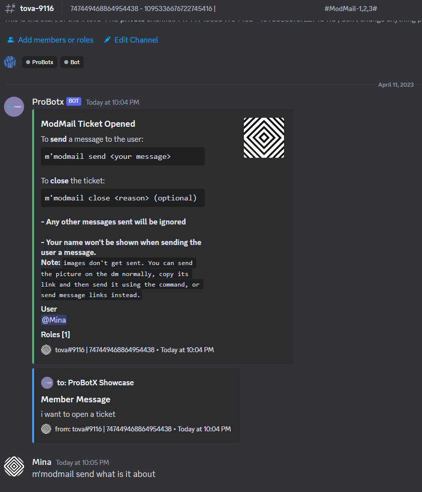
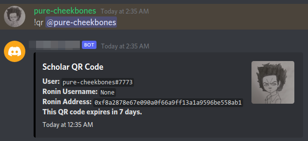

Mina Atef
ai-agent pipelines · the infra underneath
I build AI-agent pipelines end-to-end and own the infrastructure that runs them.
stack.scan()
What I reach for by default, from the OS underneath up to the agent layer.
- languages/
- python·django·typescript·bash·nix·sql·html/css
- systems/
- fedora atomic (bootc)·debian servers·systemd·docker/podman·nix + home-manager
- ai + agents/
- rag·pipelines·agents·mcp servers·agent skills·local models
- practice/
- git + review·rest apis·sqlite·github actions·pytest·automation
work.list()
Nine builds, in the order they shipped.
-
docpipe
Hashes a folder of text, markdown and PDFs into a SQLite index you can query by term, vector or hybrid — and refuses to build a row it cannot trace back to a real file. Also ships as a Hermes plugin.

- python
- sqlite
- hybrid retrieval
- cli
-
langpipe
Turns a word list and a few grammar points into a working study plan: generated practice cards, research-backed spaced-repetition scheduling, retention stats that tell the truth and an idempotent Anki sync. Also ships as a Hermes plugin.

- python
- spaced-repetition
- anki sync
- cli
-
book-man
A dyslexia-friendly study companion: converts a PDF or EPUB textbook into a flat Obsidian wiki an agent can query, then files every answer back into it. Also an OpenCode plugin.

- typescript
- mineru
- obsidian
- opencode
-
agent-skills
Twelve first-hand skills for coding agents — Fedora Atomic ops, PDF tooling, browser automation, editor integration — each one loaded only when a task matches it. Published on ClawHub.

- markdown
- hermes
- pdf tooling
- github actions
-
mina-fedora-atomic
My daily-driver OS as a bootc image from a twelve-stage Containerfile: OS, drivers, desktop and hardware quirks all in the repo, two hardware profiles from one source.

- bootc
- containerfile
- just
- niri
-
nix-mina
A personal Nix flake for my own machines — MangoWC, Dank Material Shell and Home Manager modules in one reproducible tree.

- nix
- home manager
- mangowc
- flake
-
QuickFlips
Discord bot that watches eBay listings for underpriced items and pushes the good ones to subscribers — per-user search options and filters, so nobody drowns in pings.

- python
- discord.py
- ebay api
- scheduled jobs
-
ProBotX
An all-in-one Discord bot running in live communities: moderation, games and utilities, plus a small web dashboard for the settings that should not need a command.

- python
- discord.py
- moderation
- hosting
-
Infinity-Team
Axie Infinity team management — scholarships, rosters and payout tracking in one place instead of a spreadsheet four people argue over.

- python
- discord.py
- axie api
- payouts
experience.log()
Where I have worked, newest first.
-
may – aug 2022
software engineering intern · outreachy · remote
Rebuilt the REST API layer of saskatoon-ng — an indexed query path where every request used to touch the whole table — and measured the hot endpoint at ~160× faster. Shipped it to a Debian production stack: systemd services, a packaged Python environment, log review on deploy.
- python
- django rest framework
- rest apis
- postgresql
- systemd
- debian
-
2021 – 2022
bot developer · freelance · discord platforms
Built and maintained three production Discord bots for paying communities — QuickFlips, ProBotX and Infinity-Team. Requirements, hosting, scheduled jobs and support were on me, for users who noticed every minute of downtime.
- python
- discord.py
- third-party apis
- hosting
-
2018 – 2019
course instructor · programming fundamentals
Taught beginner programming sessions to small groups — wrote the lesson material and ran the labs. Explaining a stack trace without jargon is still the habit I lean on as a developer.
- teaching
- technical writing
- python
education / certification
B.A. Business Administration
Ain Shams University, Cairo — graduated 2026
AWS Certified Cloud Practitioner
Amazon Web Services — cloud fundamentals, billing and the shared-responsibility model
résumé.pdf — current as of september 2026
let's.talk()
WhatsApp and Telegram are the fastest ways to reach me — email works too. Or ask the assistant in the corner — it answers from the facts on this site.
The assistant runs on the same facts this page is built from, so the obvious questions get answered before anyone waits on me.
#!/usr/bin/env bash
$ ./contact.sh
name Mina Atef
city cairo, egypt
timezone africa/cairo · utc+2 (+3 summer)
email mina-andajos-work@outlook.com
whatsapp wa.me/201273639988
telegram t.me/minay2k
github github.com/mina-atef-00
status open to work
$